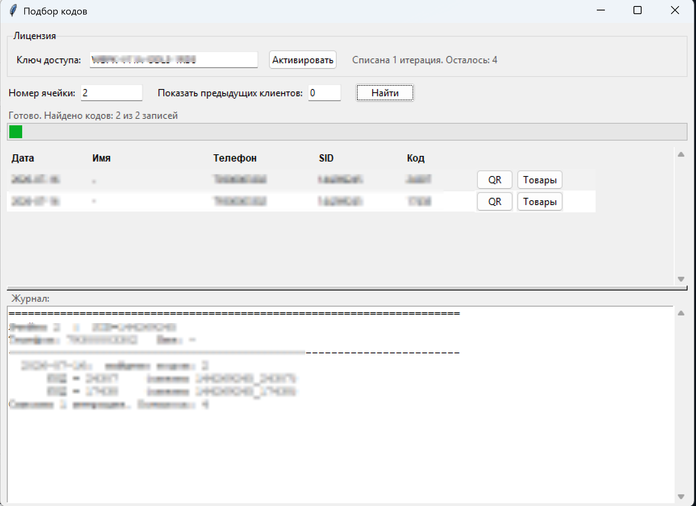

Впишите номер ШК (только цифры) — код для QR вычислится автоматически по алгоритму WB.
Подбор кодов — программа для ПВЗ
Программа устанавливается на тот компьютер, на котором выполнен вход
в WB PVZ (там же обычно работает wb_point_desktop). По
номеру ячейки она находит клиентов и подбирает их коды получения.
Первый подбор кода — бесплатно. Дальше — по ключу доступа.
Обычный установщик: ставит программу как приложение, с ярлыками и удалением через «Программы и компоненты». Подходит для Windows 7/10/11.
Антивирус или SmartScreen может предупредить при первом запуске — программа без цифровой подписи. Нажмите «Подробнее → Выполнить в любом случае».
